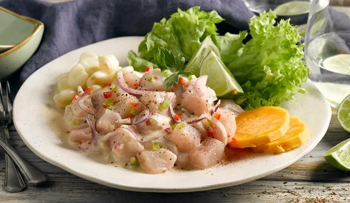

INICIO
Ceviche

El Ceviche es el popular plato peruano de Pescado y limón
Ingredientes
- 400 g de pescado blanco fresco (corvina, merluza, tilapia o lenguado).
- 1 cebolla roja (o morada) mediana, cortada en juliana fina.
- 1 ají limo (o en su defecto, ají amarillo o rocoto), sin venas y picado finamente (opcional, para dar picante).
- Jugo de 8-10 limones verdes (aproximadamente 1 taza, debe ser suficiente para cubrir el pescado).
- 1 diente de ajo picado o molido (opcional, para aderezar).
- Sal al gusto.
- Pimienta al gusto (opcional).
- Cilantro fresco picado (al gusto, unos 2-3 cucharadas).
- 1 choclo (mazorca de maíz) cocido (opcional, para acompañar).
- Camote (batata) cocido (opcional, para acompañar).
- Hojas de lechuga (opcional, para decorar el plato).
Pasos
- Sazona el pescado:Agrega sal, pimienta y el ajo molido (si usas). Mezcla ligeramente.
- Marina con limón: Vierte el jugo de limón sobre el pescado hasta cubrirlo por completo. Revuelve y deja reposar 5 minutos (si prefieres más cocido, espera hasta 10-12 min). El pescado cambiará de color (se volverá opaco).
- Agrega los demás ingredientes: Incorpora la cebolla roja en juliana, el ají picado (sin venas) y el cilantro. Mezcla todo con cuidado.
- Prueba y ajusta: Verifica el punto de sal y acidez (agrega más limón o sal si es necesario).
- Sirve fresco: Coloca el ceviche en un plato con hojas de lechuga (opcional). Acompaña con choclo cocido (cortado en trozos) y camote hervido en rodajas.